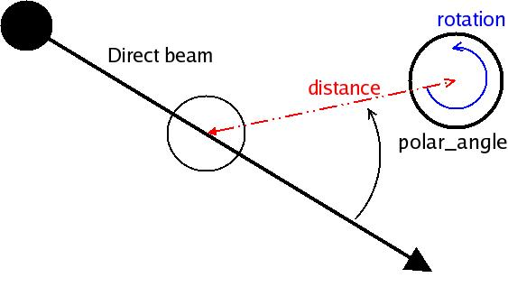
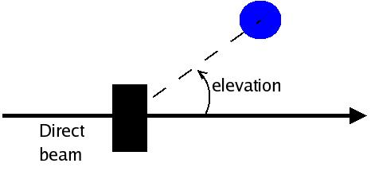
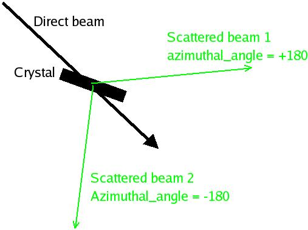
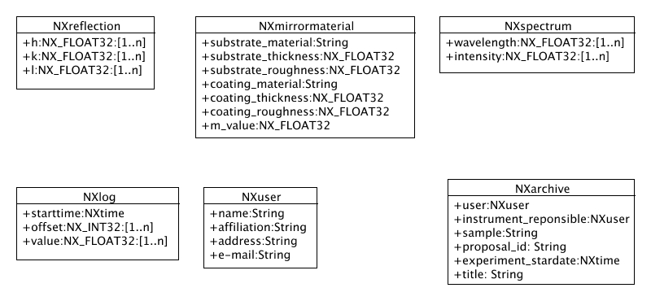
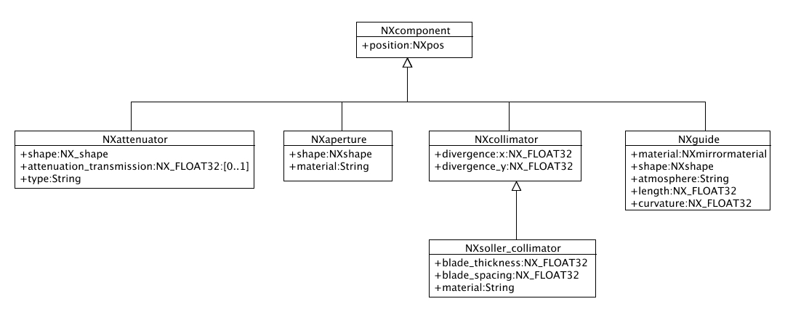
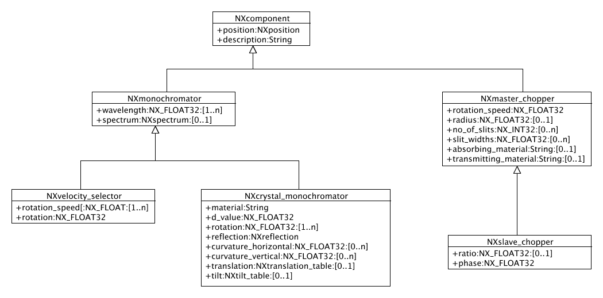
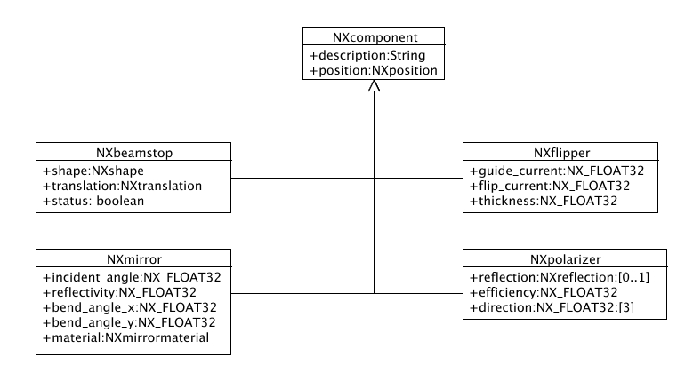
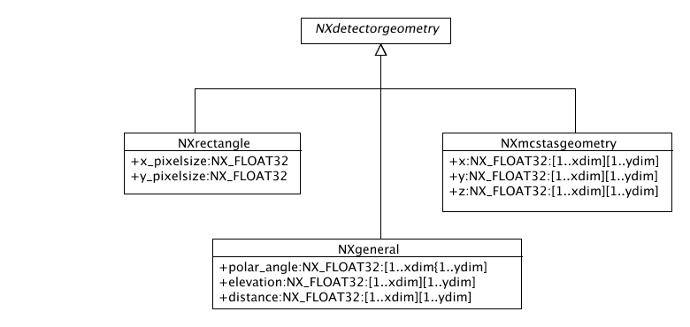
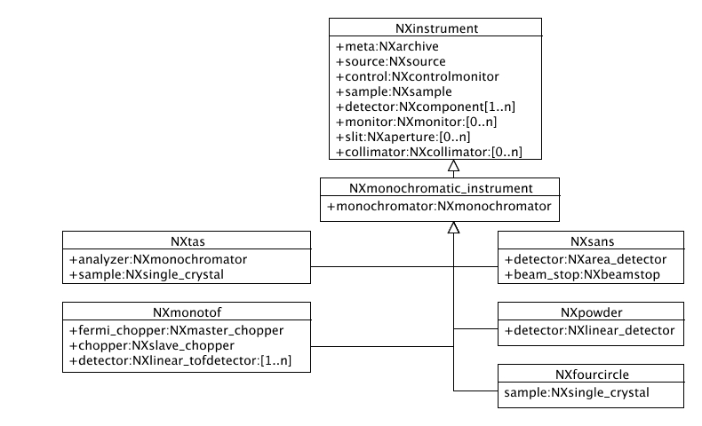

Object Oriented NeXus Classes
Mark Könnecke
Laboratory for Development and Methods, PSI
Simple Coordinate System
- The plane perpendicular to the main rotation axis of the sample table defines the
scattering plane of the instrument.
- As components are commonly positioned using angles, a polar coordinate system is used.
- When distances are required then we assume that the sample is a zero. Distances towards the
source are negative, distances behind the sample, towards the detector are positive.
Polar Angle, Distance and Rotation
- Polar angle synonymous to two theta or gamma. Longitude in geography
- Birds eye view on scattering plane:

Elevation
- Standing besides the instrument:

- Elevation corresponds to latitude in geography. In neutron scattering this is often the angle nu.
Azimuthal Angle
- Again birds eye view onto the scattering plane

Miscellaneous Classes

Passive Beam Line Components

Active Beam Line Components

More Beamline Components

Detectors
- Concerning data handling there are the following types of detectors:
- single detectors
- linear detectors
- area detectors
- ID detectors
- For each detector pixel we need to be able to deduce:
- The scattering angle towards the previous component
- The elevation out of the scattering plane
- The distance to the previous component
- All detectors can be described by the general case where we give those values for each pixel
Area Detector geometry

Monochromatic Instruments

Conclusion
- The current NeXus classes are messy due to lack of specialization
- More classes improve clarity
- Inheritance brings better maintainability: for instance adding NXellipitcal as
a NXshape does not require changes downstream
- Caveats:
- backwards compatability difficult
- description in XML problematic
- NAPI should know about inheritance hierarchies